Archive
This section collects a selection of earlier projects spanning branding, web design, UI systems, and experimental concepts.
While not all projects are currently live, they represent key stages of my evolution as a designer — from visual identity to complex digital interfaces.
View detailed case studies, galleries, and available prototypes through the links below.
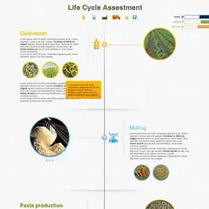
Barilla - Web & printing material
Web & Graphic DesignI created an infographic illustrating the life cycle assessment of Barilla pasta, presenting the main stages of the process—from cultivation and milling to production and distribution. The goal was to communicate complex sustainability information clearly and visually.
Additionally, I designed printable sheets featuring different pasta recipes, complete with nutritional information, combining functionality and visual appeal for an engaging user experience.
{kind=link}
{kind=link}
{kind=link}
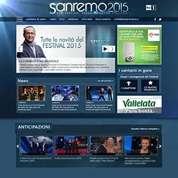
RAI - Sanremo 2015
Web DesignGraphic concept for RAI’s Sanremo 2015, Italy’s most prestigious and long-running music festival.
Designed a clean visual identity despite an outdated CMS with no responsive features, focusing on clarity, consistency, and functional design within technical limitations.
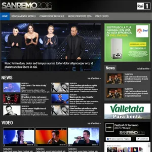
RAI - Sanremo 2016
Web DesignGraphic concept for RAI’s Sanremo 2016, the country’s leading music festival with decades of history.
Delivered a cohesive visual identity while working with an outdated, non-responsive CMS, emphasizing readability, structure, and streamlined presentation under CMS constraints.
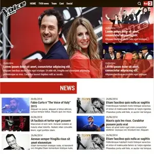
RAI - The Voice of Italy
Web DesignThe UI for RAI’s The Voice of Italy TV show, creating a clear visual identity Relying on Wordpress native responsive features. Focused on readability, consistency, and a streamlined design system.
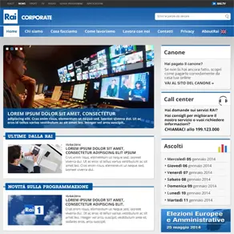
RAI.it Corporate
Web DesignRedesigned visual concepts for the RAI corporate website, working with an outdated CMS that had very basic responsive features and at the time was only allowing designs for smaller screens (around 800px). Focused on creating a clear, consistent, and professional visual identity while addressing the technical limitations, emphasizing readability, structure, and streamlined presentation within the restricted system.
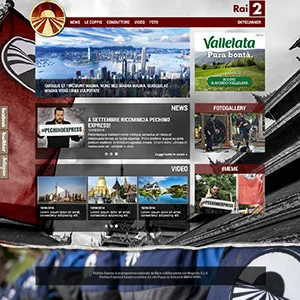
RAI - Pechino Express
Web DesignGraphic concept and visual design for RAI’s Pechino Express, developed on WordPress. Created a bold and engaging visual identity reflecting the dynamic, adventurous spirit of the show, with a strong focus on structure, usability, and content presentation.
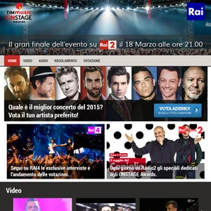
RAI - On stage Awards
Web DesignThe UI for RAI’s The Voice of Italy TV show, creating a clear visual identity having in mind Wordpress as the used CMS. Focused on readability, consistency, and a streamlined design system within technical constraints.
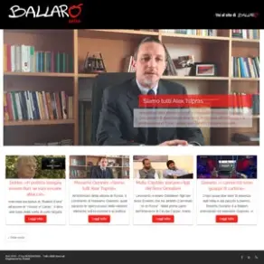
RAI - Ballarò
Web DesignFor the RAI TV show Ballarò, I created a simple yet effective graphic concept to establish a clear and consistent visual identity.
The project involved designing layouts and visual elements that could work within Wordpress as a CMS. I focused on clarity, readability, and a coherent aesthetic that matched the show’s theme.
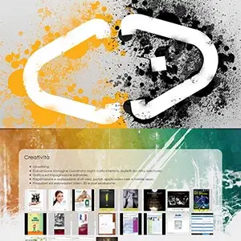
Clan-Group
Web DesignCreated a quick online presentation site for Clan Group, a web and communication agency, built using plain HTML, CSS, and jQuery. The project focused on delivering a clean, responsive showcase of the agency’s services and identity with lightweight, performant code and smooth interactive elements.
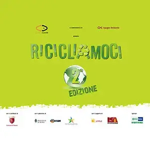
Ricicliamoci
Graphic DesignI designed a series of wall panels (2 × 4 m) for the 'Ricicliamoci' (Let's recycle) exhibition in Romn, aimed at raising awareness about recycling household materials and waste. The panels combined clear visual design with informative content to show the life cycle of everyday materials and encourage sustainable habits.
The project focused on making complex information accessible and engaging, helping visitors understand how small daily actions can have a positive environmental impact.
{kind=link}
{kind=link}
{kind=link}
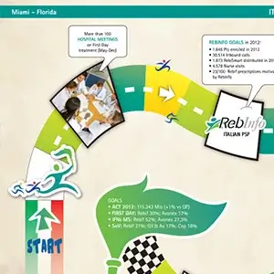
Merck Serono - Pharmaceutical
Graphic DesignDesigned posters and brochures using Adobe Illustrator and InDesign. The brochure served as an informative guide for a medical device, structured for clarity and technical precision. The poster was conceived as a board game, distributing key information across the game squares to create an engaging yet informative visual experience.
{kind=link}
{kind=link}
{kind=link}